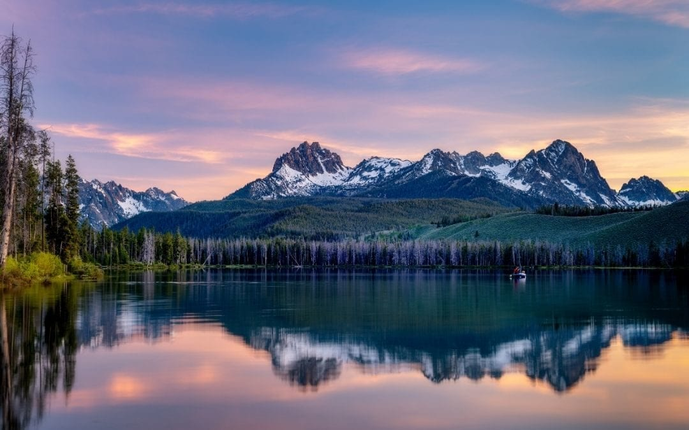
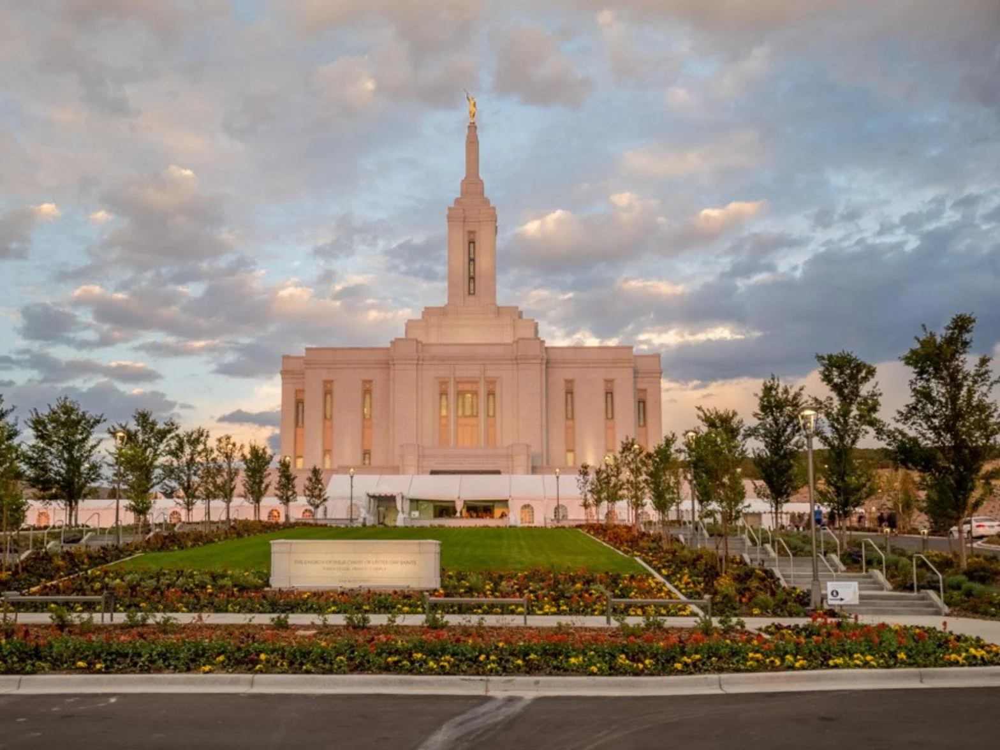
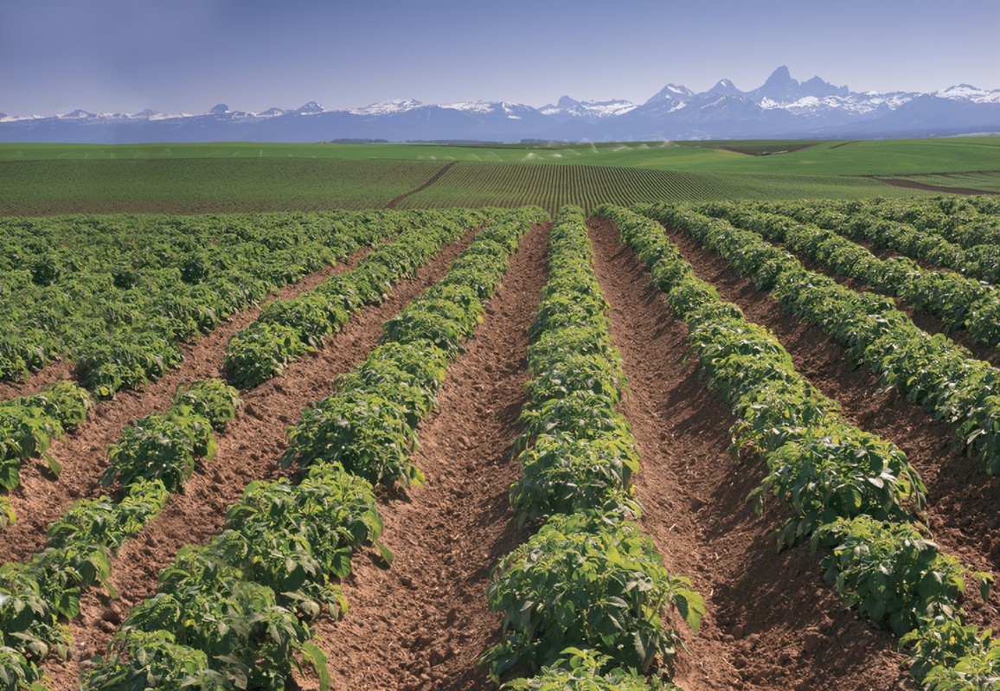

Idaho, nestled in the heart of the Rocky Mountains, is a state of breathtaking natural beauty and rugged landscapes. Known as the Gem State, Idaho boasts vast expanses of wilderness, including towering mountains, deep river canyons, and pristine lakes. Its vibrant outdoor recreation opportunities draw adventurers from far and wide, offering activities such as skiing, hiking, whitewater rafting, and fishing. Beyond its natural wonders, Idaho is also rich in history and culture, with a blend of Native American heritage, pioneer spirit, and modern innovation. From the bustling capital city of Boise to the charming small towns scattered throughout the state, Idaho captivates visitors with its stunning scenery and warm hospitality.
Idaho's culture is as diverse as its landscape, shaped by a blend of traditions, histories, and the spirit of its residents. With a population known for its friendliness and strong sense of community, Idahoans embrace both the pioneering ethos of their frontier past and the modern innovations shaping their present. From the rich tapestry of Native American heritage to the influence of early settlers and the contributions of diverse immigrant communities, Idaho's cultural mosaic is vibrant and evolving. Residents take pride in their agricultural heritage, celebrating events like the Idaho Potato Harvest Festival, while also embracing the arts, music, and culinary scenes that thrive in cities like Boise and Coeur d'Alene. Whether celebrating at local festivals, supporting small businesses, or simply enjoying the company of neighbors, the people of Idaho embody a spirit of resilience, creativity, and hospitality that defines the Gem State's culture.
Mountains and Lakes
Idaho's mountains and lakes form the backbone of its natural allure, beckoning travelers to explore their grandeur. The towering peaks of the Sawtooth Range stand as sentinels over shimmering alpine lakes, creating postcard-perfect vistas at every turn. Lakes such as Lake Coeur d'Alene, Redfish Lake, and Payette Lake offer not only stunning scenery but also opportunities for boating, swimming, and lakeside relaxation. Meanwhile, the rugged terrain of the Bitterroot Mountains and the expansive wilderness of the Frank Church-River of No Return Wilderness provide endless possibilities for outdoor adventure, from backcountry hiking to wildlife spotting. Whether seeking serenity amidst pristine landscapes or seeking thrills in the great outdoors, Idaho's mountains and lakes offer something for every nature enthusiast.
Pocatello Temple
The Pocatello Idaho Temple, a sacred symbol of faith and devotion, stands as a beacon of spiritual strength in the heart of southeastern Idaho. Dedicated in 2017, this magnificent edifice is a testament to the enduring presence of The Church of Jesus Christ of Latter-day Saints in the region. With its elegant design and stunning architecture, inspired by the natural beauty of the surrounding landscape, the temple serves as a place of worship, reflection, and reverence for Latter-day Saints and visitors alike. Surrounded by meticulously landscaped gardens and nestled amidst the rolling hills of Pocatello, the temple offers a tranquil sanctuary where believers can come to find solace, seek guidance, and renew their commitment to their faith. As a cherished landmark in the community, the Pocatello Idaho Temple inspires a sense of unity, spirituality, and divine connection among all who enter its sacred walls.
Idaho Magic Potato Field
Idaho's iconic potatoes and the vast fields where they grow are emblematic of the state's agricultural prowess and economic significance. Known worldwide for producing some of the finest potatoes, Idaho's fertile soil, ample sunshine, and cool climate create optimal conditions for potato cultivation. The rolling fields of russet, red, and Yukon Gold potatoes stretch across the landscape, painting a patchwork of green and gold that is both picturesque and productive. These fields not only sustain local farming communities but also supply a significant portion of the nation's potatoes, contributing to Idaho's reputation as the "Potato State." From the planting and harvesting seasons that mark the rhythm of rural life to the bustling potato processing plants that dot the countryside, the potato fields of Idaho are not only a source of livelihood but also a symbol of the state's agricultural heritage and economic vitality.